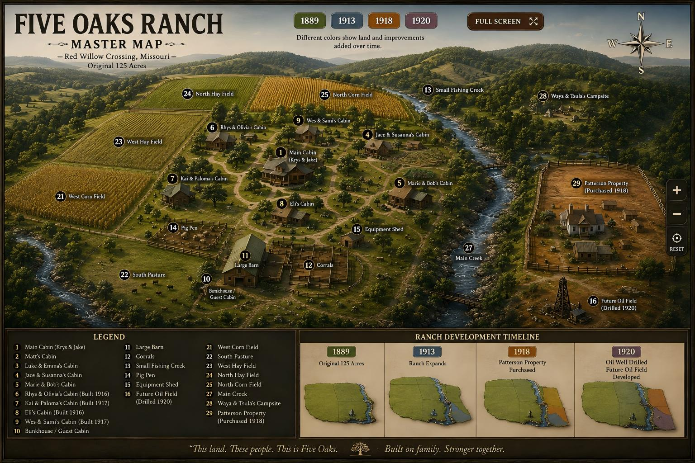

Five Oaks Ranch Master Map
The official Five Oaks ranch map: original 125 acres, the large creek through Five Oaks, the small fishing creek from the hills, Patterson property, the hillside campsite, and the full 1918 ranch layout.

Five Oaks Master Map
Click a region of the map for notes. This page now uses the approved artwork as the official Ranch Map image.
Canon map page. Do not replace unless the approved master map image changes.